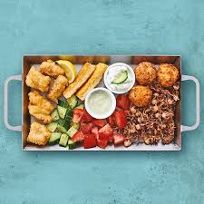
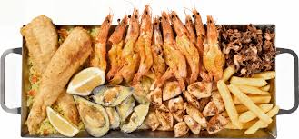
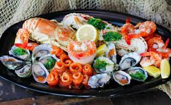

OCEAN BASKET
The first Ocean Basket seafood restaurant opened its doors in 1995 in Menlyn Park, Pretoria. Fats Lazarides had seen the opportunity to create a restaurant that served delicious seafood at affordable prices. In those days, seafood restaurants were reserved for the upper crust, and a portion of prawns was a real extravagance. Fortunately, Fats had always been one to swim against the current.